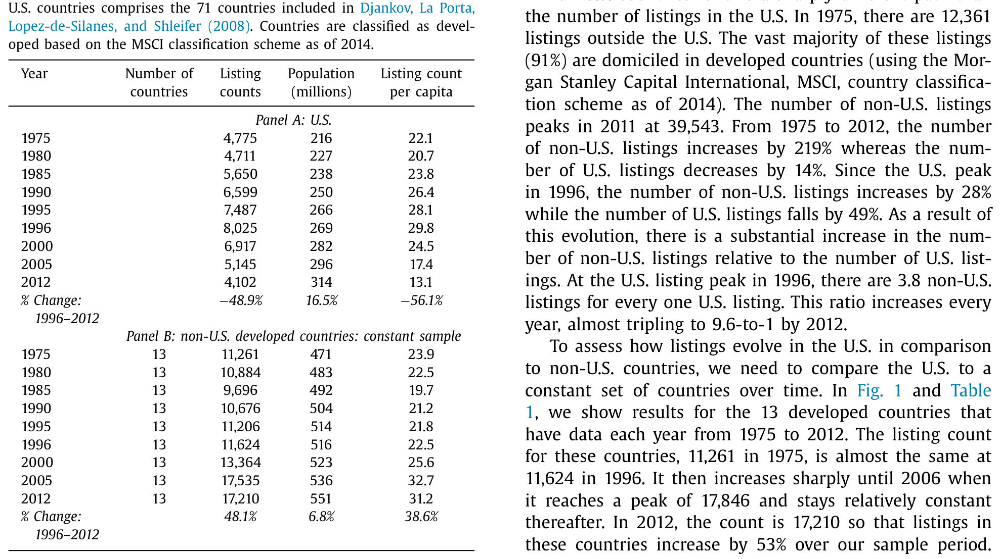
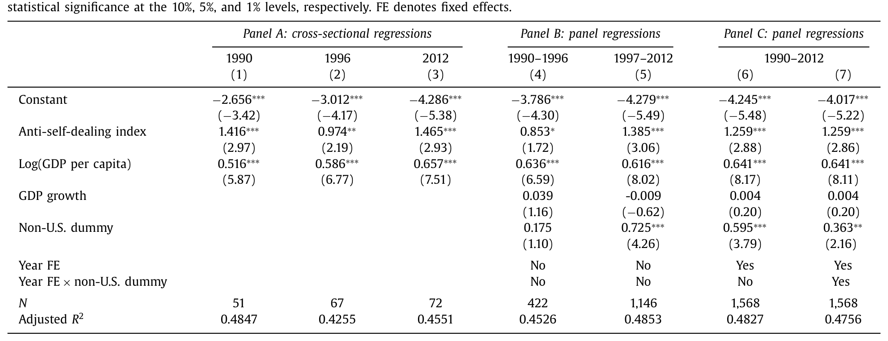
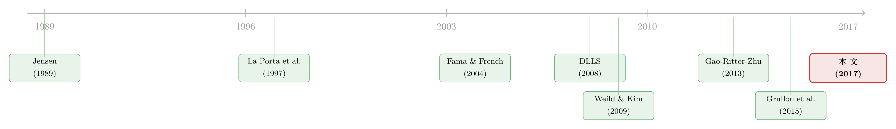

美国为什么「丢」了一半上市公司？
本文读的是 Doidge, Karolyi & Stulz (2017, Journal of Financial Economics)：1996 年美国有 8,025 家本土上市公司，到 2012 年只剩 4,102 家——几乎腰斩。可同一时期，全世界其他国家的上市公司数却在涨。两位作者把这道「美国上市缺口 (U.S. listing gap)」拆开，发现它既不是因为公司变少了，也主要不是因为 SOX 法案吓跑了小公司，而是新股太少 + 退市太多两头夹击，其中退市又主要是被「上市公司收购上市公司」这股并购浪潮吃掉的。
1 一个让人不安的数字
先说一个事实，它本身就足够刺眼。
1996 年是美国股市的「上市巅峰」：那一年，有 8,025 家在美国注册、在美国交易所挂牌的本土公司。这是一个增长了二十年才堆起来的高点——从 1975 年的 4,775 家，到 1996 年的 8,025 家，累计涨了 68%。
然后，掉头向下。从 1997 到 2012 年，美国上市公司数逐年下降，一年都没回头，累计减少 3,923 家，跌幅 49%。到 2012 年只剩 4,102 家——这是过去四十年里的最低点，甚至比 1975 年还少 14%。
如果你只看美国，你可能会找一万个理由来解释：互联网泡沫破了、SOX 法案太严、监管成本太高、好公司都去搞私募了……这些故事听起来都顺理成章。
但作者做了一件让所有这些故事都站不住脚的事——他们抬头看了看别的国家。
2 把美国放回世界里
接着，一个自然的问题是：上市公司变少，是不是全球性的现象？毕竟技术在变、组织形态在变，这些力量并不认国界。
答案是：恰恰相反。
作者用世界银行的 WDI 数据库和世界交易所联合会的 WFE 数据库，拼出了一份覆盖全球的上市公司面板（剔除了投资公司、共同基金、REITs 等集合投资工具）。结果是一幅截然相反的图景：1975 到 2012 年，非美国的上市公司数增长了 219%，而美国减少了 14%。如果只看 1996 年这个美国巅峰之后：非美国上市数还涨了 28%，美国却跌了 49%。
最直观的一个比值：1996 年，全世界每有 1 家美国上市公司，就有 3.8 家非美国上市公司；到 2012 年，这个比值几乎翻了三倍，变成了 9.6 比 1。

Table 1
更要紧的是，作者特意挑出了 13 个从 1975 年到 2012 年每年都有数据的发达国家，做成一个「不变样本 (constant sample)」——这样比较才公平，不会被新进入数据的国家搅乱。这 13 国 1975 年有 11,261 家上市公司，1996 年是 11,624 家，几乎没变；之后一路涨到 2006 年的峰值 17,846 家，2012 年是 17,210 家，整个样本期涨了 53%。
于是结论清楚了：美国上市公司腰斩的那段时间，别的发达国家上市公司数涨了约一半。这意味着，任何「不认国界」的解释——比如全球性的技术变革——都没法解释美国这道缺口。要理解这件事，必须解释为什么偏偏是美国、偏偏是 1996 年之后。这是全文的「锚」。
（关于「上市公司是否还能代表一国经济」这个更大的追问，可参见《当失业率与纳斯达克背道而驰：股市还能代表经济吗？》。）
3 一个朴素的恒等式，和一个朴素的模型
要把问题问准，作者先引入了一个几乎是同义反复、却极其有用的记号。
令上市公司数为 \(L\)，经济中所有「可能上市」的企业总数为 \(N\)，一家企业选择上市的「倾向 (propensity)」为 \(p\)，那么：
$$ L = p \times N $$
上市公司要变少，无非两条路：要么是上市倾向 \(p\) 在降，要么是可上市的企业池 \(N\) 在缩。对一段时间求变化，就得到本文的核心分解式：
这个式子看起来平平无奇，但它把一个含糊的问题（「为什么上市公司少了」）逼成了一个可以查证的问题：到底是 \(\Delta p < 0\)，还是 \(\Delta N < 0\)？
为了给 \(p\) 一个经济含义，作者搭了一个极简模型：上市有一笔固定成本和一笔随规模上升的可变成本；而上市的收益对最小的公司为零、并随公司规模递增——因为上市最大的好处是进入公开市场融资，而这对需要筹集巨额资金、单靠私募市场喂不饱的大公司才真正值钱。
把成本和收益放在一起，就得到一个关于规模的「净收益 (net benefit)」函数：对小公司为负，对大公司为正。于是存在一个规模门槛——高于它的公司选择上市，低于它的不上。这个模型给出四条可检验的预测：
- 如果上市的净收益下降，上市倾向 \(p\) 会下降；
- 已上市公司会通过并购或私有化退出；
- 更少的公司会去 IPO；
- 留在场上的上市公司会变大——因为门槛抬高了。
注意这个模型的精妙之处：成本按比例上升，或收益按比例下降，都会抬高那条规模门槛，效果在数据里是一样的。所以光看「上市公司变少、变大」，还分不清是成本涨了还是收益跌了——这正是后文要费力气去区分的地方。
4 缺口有多大？——把美国当成「残差」
但真正关键的一步在于：怎么量出这道缺口到底有多「不正常」？
作者的办法很漂亮：先用一个跨国回归模型预测「一个国家按其制度和经济发展水平，应该有多少家人均上市公司」，再看美国的实际值偏离预测值多少。这个偏离——也就是回归的残差——就是「美国上市缺口」。
模型沿用了 La Porta, Lopez-de-Silanes, Shleifer, Vishny (1997) 和 DLLS (2008) 的经典设定：把人均上市数的对数，回归到反自我交易指数 (anti-self-dealing index)（衡量一国对关联交易的限制程度，即投资者保护）和人均 GDP 的对数上。
结果见下表。重点看 Panel B 里两个分时段的面板回归：

Table 2
- 巅峰前 (1990–1996)，给非美国国家加一个虚拟变量，系数是
0.175，t 值只有1.10——不显著。也就是说，这段时间美国没有缺口：给定制度和经济水平，美国的人均上市数和别国没有系统差异。 - 巅峰后 (1997–2012)，同样的非美国虚拟变量系数跳到
0.725，t 值4.26——高度显著为正。这意味着别国的人均上市数显著高于美国应有的水平：美国出现了上市缺口。
与此同时，反自我交易指数（系数约 0.85–1.47）和人均 GDP 对数（约 0.52–0.66）始终显著为正，和文献一致；调整后 \(R^2\) 在 0.45 上下。把误差双重聚类到国家和年份，结论不变。
用全样本带年份固定效应的 Model 7 把每一年的缺口算出来，就得到那张著名的「美国上市缺口」逐年图：缺口在 1999 年之后才显现，此后逐年扩大，到 2012 年超过 5,000 家。
5 反转：不是公司变少了，是公司「不上市了」
有了缺口的度量，回到那个分解式 \(\Delta L = \Delta p \times N + p \times \Delta N\)。
到底是哪一项在作怪？这一步需要一个美国国内的「企业普查」数据，作者用的是美国人口普查局的纵向商业数据库 (Longitudinal Business Database, LBD)。结果很干净：可上市的企业总数 \(N\) 一直在涨，直到 2008 年才回落，但 2012 年仍比 1996 年高 7.5%。而且按雇员人数分的每一个规模档，企业数都在增加。
于是逻辑闭合了：\(N\) 在涨，\(L\) 在跌，那必然是上市倾向 \(p\) 在跌。不是没有公司可上市，是公司选择不上市了。 这恰好对上了模型的第一条预测，也彻底排除了「美国就是公司少了」这条解释。
那 \(p\) 为什么跌？作者再把它拆成两半：新上市率 (new list rate) 和 退市率 (delist rate)。
这是全文最重要的一个发现：缺口是两头造成的——巅峰之后，新上市的步伐异常地慢，退市的步伐异常地快。退市率偏高解释了缺口的 46%，新上市率偏低解释了 54%。两者缺一不可：哪怕新上市率维持在历史均值，单凭偏高的退市率，美国仍然会有一道缺口。
6 那 SOX 呢？那「弱公司」呢？——两个被否掉的嫌疑人
接着，作者要逐一送走几个最流行的「凶手」。
嫌疑人一：SOX 法案。 很多人把账算在 2002 年的《萨班斯-奥克斯利法案》头上——合规成本太高，把小公司逼下了市。但作者指出：到 SOX 成为法律的时候，缺口的扩大已经完成了一半。换句话说，缺口在 SOX 之前就在长。这说明，真正起作用的是一个先于 SOX、且与上市净收益下降有关的东西，而不是单一一部法律。
嫌疑人二：弱公司。 Fama and French (2004) 发现 1990 年代末上市的公司更弱——盈利更差、增长更慢。如果是这样，那退市潮应该集中在这些「新近上市的弱苗子」身上。但作者查了数据：巅峰之后，新上市公司的退市并不比老牌上市公司更集中。所以「一批弱公司上市后陆续死掉」这个故事，数据不支持。
嫌疑人三：市场太差。 如果是宏观环境不好导致更多困境退市呢？作者发现，一旦把市场条件考虑进去，缺口反而更大了——也就是说，坏环境不仅没法解释缺口，反而让缺口显得更反常。
7 真凶：上市公司在「互相吞并」
那退市率为什么这么高？最后的落点在这里。
退市的大头，被一个东西解释了：上市公司被上市公司收购的速度异常之快（public acquirers 收购 public targets）。退市不是因为公司死了，而是因为它们被并购走了。结果就是，留在场上的公司越来越少，也越来越大——连最小的那批上市公司，如今的规模都远超 1996 年巅峰时最小的那批。
这正好把模型的四条预测全部对上了：\(p\) 降、通过并购退出、IPO 减少、留下来的公司变大。所有证据都指向同一个解释——在美国，上市的净收益下降了，那条「值得上市」的规模门槛被抬高了。而且这是一个美国特有的现象，不是全球性的技术变革，否则别国的上市数不会同时在涨。
但作者很克制：缺口本身未必是坏事。也许只是最优企业规模因技术变化而上升了，公司更少但更大（这正是 Gao, Ritter, and Zhu, 2013 的视角），那这跟「当公众公司值不值」就没关系，甚至可能是好事。也可能是新的组织形态——比如有私募股权背书的私人公司，正是 Jensen (1989) 设想的那种——变得更高效了。本文并不急于给「好/坏」下判断，它只是把机制讲清楚了。
8 文献脉络
把这篇文章放回它生长的那条线上，会更清楚它站在哪。
最早，是 Jensen (1989) 那篇「公众公司的黄昏」——他预言杠杆收购和私募股权会侵蚀公众公司的地位。这条「公众公司是否在式微」的担忧，埋了二十年。（关于 Jensen 这套自由现金流逻辑的当代回响，可参见《现金为什么一定要「还」出去？——四十年后，重读 Jensen 的自由现金流》。）
另一条线是「制度决定上市」：La Porta et al. (1997) 把一国的上市公司数和法律、投资者保护联系起来，DLLS (2008) 用反自我交易指数把这套跨国回归做实——这正是本文测量缺口所借用的「尺子」。
到了 2000 年代末，关于「美国 IPO 去哪了」的讨论密集起来：Weild and Kim (2009) 喊出「给美国敲响警钟」，Fama and French (2004) 记录了新上市公司的脆弱，Gao, Ritter, and Zhu (2013) 提出「最优规模上升、小公司不再上市」的解释，Grullon, Larkin, and Michaely (2015) 等也注意到上市数的下滑。

本文 (2017) 的位置很特别：它不满足于「美国 IPO 少了」这个国内叙事，而是第一个把美国放进全球面板，证明缺口是美国特有的；又第一个把缺口干净地分解成新上市与退市两头，并指出退市的真凶是公司间并购。它把一堆零散的观察，收进了一个「上市净收益下降」的统一框架里。
9 评论与延伸（Q&A + 研究方向）
(a) 几个可能的疑问
Q：「上市缺口」会不会只是会计口径的问题——比如把 REITs、双层股权公司算进算出？
不太可能。作者全程剔除了投资公司、共同基金、REITs 等集合投资工具，且口径在美国与非美国、巅峰前与巅峰后保持一致。更关键的是，缺口是用跨国残差定义的：同一套口径下，美国 1996 前没缺口、1996 后才有，说明这不是静态的口径差异，而是动态的行为变化。
Q：缺口的 46%/54% 这个拆分，是不是对「正常退市率/新上市率」的假设很敏感？
有一定依赖，但结论的定性部分很稳健。作者的核心论断不是「精确到 46%」，而是「两头都偏离了历史常态，且缺一不可」——哪怕只把新上市率拉回历史均值，单凭偏高的退市率，缺口依然存在。这个「两个条件都必要」的结论比那个百分比更重要。
Q：把美国当成回归的「残差」来定义缺口，会不会本身就有问题——万一模型设定漏了某个美国特有的变量？
这是最值得担心的识别问题。作者用了反自我交易指数、人均 GDP、GDP 增速、年份固定效应，且换用普通法虚拟变量结论不变。但残差法的本质是「无法解释的部分」，它既可能是「上市净收益下降」，也可能是模型遗漏的美国特征。文章的说服力更多来自机制证据（\(N\) 在涨、并购退市、公司变大），而非残差本身。
Q：既然别国上市数在涨、美国在跌，会不会只是美国公司「跑去别国上市」了？
数据口径是「本土注册、在本国交易所上市」，所以美国公司跑去伦敦上市不会被算进别国的本土上市数。而且缺口是相对于「同等制度国家应有的水平」，不是简单的此消彼长。跨境上市更像是另一个独立现象。
Q：缺口到底是好事还是坏事？
本文刻意不下结论。如果是最优规模上升、组织形态进化（私募股权更高效），那是中性甚至正面的；如果是上市对小公司变得太不划算、抑制了它们融资成长，那可能意味着「公众公司太少」、拖累经济。作者只确立了「净收益下降」这个机制，价值判断留给了后续研究。
Q：这和「美国公司越来越集中、越来越大」的产业集中度讨论是一回事吗？
高度相关但不等同。本文讲的是上市公司数量的下降和留存公司规模的上升；产业集中度讲的是市场份额向头部集中。并购既减少上市公司数、又抬高集中度，所以两条线在「公众公司并购浪潮」这个机制上交汇，但度量的对象不同。
(b) 几个可能的研究问题与提案
1. 上市缺口与公司债市场的此消彼长
【经济故事】公司少上市、多被并购，但它们仍然需要融资——尤其是被私募股权买下、加了杠杆的那些。一个自然猜想是：股权公开市场的退潮，是否伴随公司债/杠杆贷款市场的扩张？也就是说，融资从「公开股权」迁移到了「私募债权」。 【可行性】中。可用
Mergent FISD、Dealogic的发债数据，配合 LBD/Compustat 的上市状态，做时间序列与横截面对照。识别难点在于因果方向——是上市退潮推动了发债，还是债市便利反过来让公司不必上市。可考虑用 SOX、利率环境作为外生冲击。
2. 外资持有人对「上市缺口」的反应
【经济故事】美国上市公司变少、变大，会改变全球被动与主动资金的可投资集合。外国机构投资者是更集中地持有少数大盘股，还是转向私募/跨境配置？这关系到一国资本市场对外资的「吸引力」。 【可行性】中。可用
13F、TIC 数据与跨境持仓数据。识别可借助本文已有的跨国面板框架。挑战在于把「缺口」与外资流动分离开宏观共同因素。（与本主题相关的跨国视角，可参见《外资真是「蝗虫」吗？——一次跨 30 国的长期投资体检》。）
3. 公开市场退潮下，留存上市公司的债券流动性
【经济故事】如果上市公司越来越少、越来越大，那么公司债的发行人结构也在「头部化」。这是否让信用市场的流动性更集中在大发行人，而中小发行人的债券更难交易？这对信用利差的流动性成分有直接含义。 【可行性】高。
TRACE提供成交级数据，发行人上市状态可从 CRSP/Compustat 匹配。可直接做发行人规模与流动性指标的横截面回归，时间维度上对照上市缺口的扩大。
4. 并购退市 vs. 私有化退市的不同后果
【经济故事】本文指出退市主要来自上市公司间并购，但并购退市和私有化（PE 收购）退市，对就业、创新、债务的后果可能完全不同。把退市按类型拆开，能更精细地回答「缺口到底好不好」。 【可行性】中。需要 SDC/Refinitiv 并购数据区分收购方类型，配合 LBD 的就业数据。识别需处理「哪些公司被选中收购」的内生性。
10 我的判断
这篇文章的贡献，在于它把一个被无数人各执一词的现象，重新提了一个对的问题：不要问「美国 IPO 为什么少了」，要问「为什么偏偏是美国、偏偏在 1996 之后」。一旦把美国放进全球面板，大半流行解释（技术变革、全球趋势）当场出局；再用 \(L=p\times N\) 这个朴素分解配上 Census 的企业普查，又把「公司变少」这条路堵死。剩下的，只能是上市净收益下降——而它的两个出口，是低新上市率和高退市率，后者由公司间并购主导。论证链条干净、克制，几乎每一步都有数据兜底。
我的担忧主要在识别。把缺口定义为跨国回归的残差，意味着它的解释力天然依赖模型设定——遗漏一个美国特有的时变变量，残差就会被错误归因。文章的说服力其实更多来自机制三角（\(N\) 增、并购退市、公司变大），而非残差本身；如果能给出一个更外生的冲击（而非时段对比）来识别「净收益下降」，结论会更硬。此外，对「缺口是好是坏」的福利判断，本文有意悬置，这诚实，但也留下了最重要的问题没答。
我接下来最想看到的，是把退市按并购 vs. 私有化 vs. 困境三类拆开，分别追踪它们对就业、创新和债务融资的长期影响——尤其是融资是否从公开股权悄悄迁移到了私募信用市场。如果是，那「上市缺口」就不只是一张股市的成绩单，而是整个企业融资版图重构的一个侧影。
参考文献
- Arikan, A., Stulz, R. (2016). Corporate acquisitions, diversification, and the firm's lifecycle. Journal of Finance 71(1), 139–194.
- Cameron, C., Miller, D. (2015). A practitioner's guide to cluster-robust inference. Journal of Human Resources 50(2), 317–372.
- Djankov, S., La Porta, R., Lopez-de-Silanes, F., Shleifer, A. (2008). The law and economics of self-dealing. Journal of Financial Economics 88(3), 430–465.
- Doidge, C., Karolyi, G.A., Stulz, R.M. (2017). The U.S. listing gap. Journal of Financial Economics 123(3), 464–487.
- Fama, E., French, K. (2004). New lists: Fundamentals and survival rates. Journal of Financial Economics 73(2), 229–269.
- Gao, X., Ritter, J., Zhu, Z. (2013). Where have all the IPOs gone? Journal of Financial and Quantitative Analysis 48(6), 1663–1692.
- Jensen, M. (1989). Eclipse of the public corporation. Harvard Business Review 67(5), 61–74.
- La Porta, R., Lopez-de-Silanes, F., Shleifer, A., Vishny, R. (1997). Legal determinants of external finance. Journal of Finance 52(3), 1131–1150.
- Weild, D., Kim, E. (2009). A wake-up call for America. Grant Thornton Capital Markets Series.